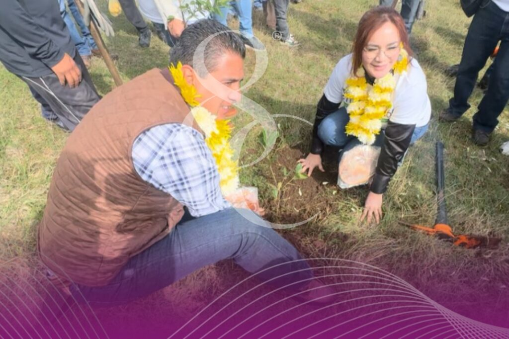

Gobernador Durazo inicia reforestacion de a sauceda con mas de 4 mil arboles
Milenio En total, se plantarán 4 mil 176 árboles en dos polígonos, integrando 14 especies nativas como guayacán, palo fierro, mezquite, palo verde azul, palo verde, palo brea, bagote, vinorama, torote prieto, torote blanco, palo dulce, ocotillo macho, ocotil. En cumplimiento a su compromiso con rescate del bosque urbano la Sauceda, el gobernador de sonora Alfonso Durazo Montaño, dio inicio a la reforestacion de este espacio con el objetivo de consolidarlo como el pulmon verde de Hermosillo y proyectar un modelo de desarrollo urbano sostenible a largo plazo. Acompañado por sociedad civil, artistas escultores y autoridades estatales, el gobernador planto el primer arbol de este proceso de restauracion ecologica, con la vision de transformar el lugar en un espacio comparable al Bosque de Chapultepec. Subrayo que este proyecto representa la materializacion de un pulmon natural en la capital sonorense y una herencia ambiental para las furturas generaciones. Se contempla la intervencion de todos los canales, nuevas areas de esparcimiento, para niñas y niños, un museo infantil, juegos, baños, zonas gastronomicas, la integracion del cerro la cementera con rutas para ciclistas y un laboratorio de educacion ambiental y desarrollo sostenile. Durante el evento, Durazo entregó estímulos económicos a las y los artistas ganadores de la convocatoria Esculturas en Madera, quienes intervendrán árboles secos del bosque con obras talladas que reflejarán la riqueza de la naturaleza sonorense. Estas especies nativas contribuirán a la resiliencia ecológica del área y fortalecen la identidad ambiental sonorense.